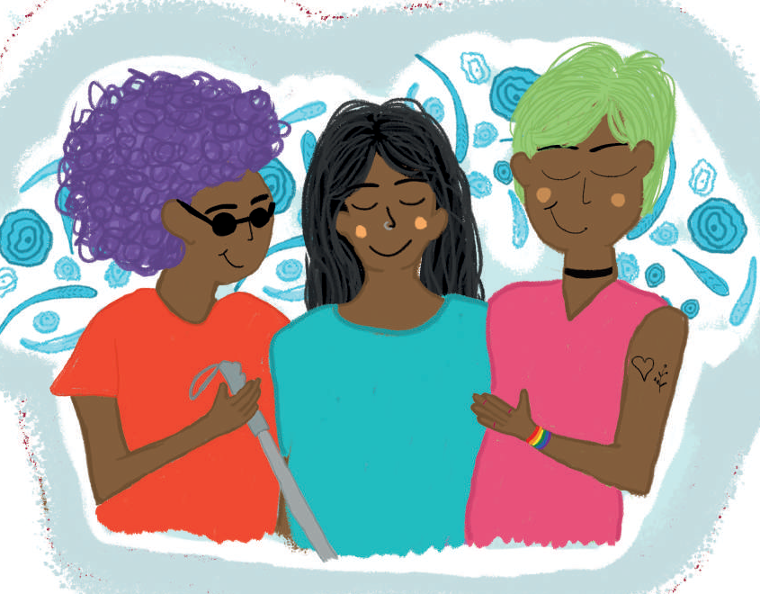

El autocuidado social puede practicarse de la siguiente forma:
Mantener el contacto con personas valiosas:
por medio de mensajes, videollamadas, llamadas, publicaciones en redes sociales, a pesar de no haber un contacto físico se convive conociendo sus opiniones, deseos, ideas, estado de salud.
Asistir/planear actividades de convivencia con otros:
como organizar una excursión, ir al museo, participar en una maratón, ir al cine, organizar una fiesta.
Todas estas acciones favorecerán el desarrollo de nuevas experiencias y se podrán compartir gustos, habilidades y destrezas.
Todas las personas deben sentirse cómodos/as en estas actividades.